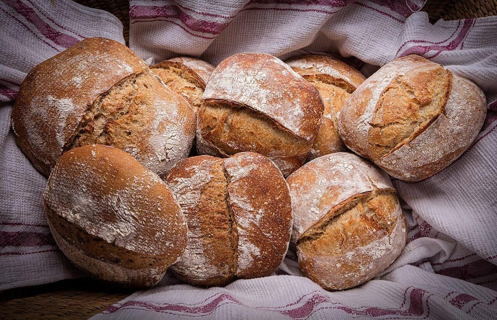
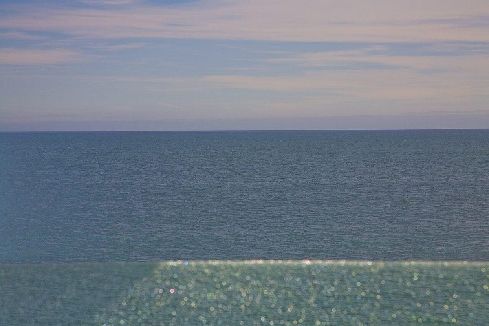
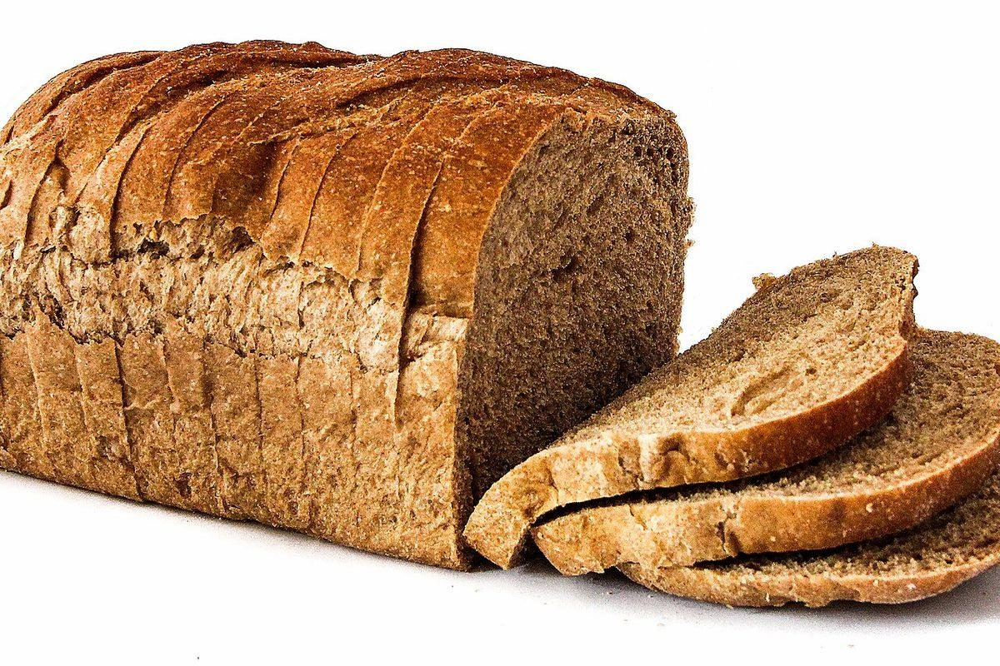
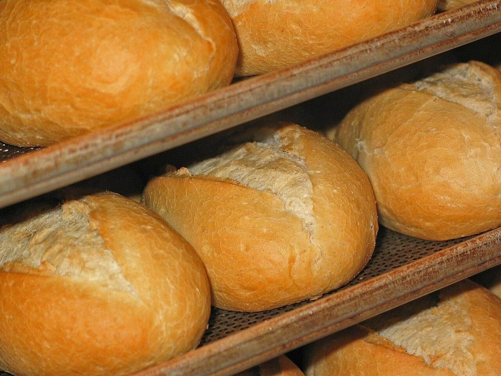
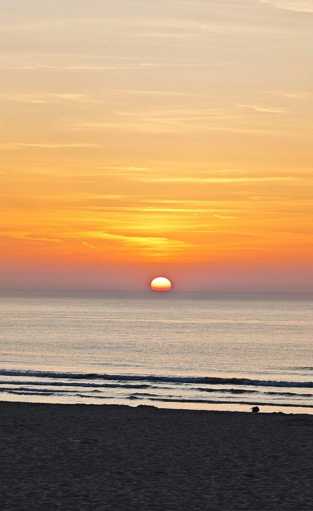

ホワイトベーカリー
制作側の連想
屋号の「ホワイト」から、白いボードを思い浮かべました。
お店の理念や名前の由来とは関係のない、制作側の連想です。「白」から白板(ホワイトボード)を連想し、このページ全体を、お知らせを書き込む白いボードに見立てました。四色のマーカーに役割を決めています。
- 黒 確認できたこと(所在地・Instagram・電話なし)
- 赤 制作側の連想や想像(お店の実際とは無関係)
- 青 写真(フリー素材)についての注記
- 緑 準備中・未確認のこと
今日の確認表
お店について、書けること・書けないこと。
- レ所在地: 山口県長門市仙崎985-6(〒759-4106)
- レInstagram: @white.bakery.bread.pizza
- レ電話: なし
- 営業時間 準備中
- 定休日 準備中
- メニュー・価格 準備中
- ご予約・駐車場 準備中
貼り紙のコーナー(イメージ)
白板に貼った写真たち。
写真は仙崎やお店のものではありません。国外または撮影地不明のフリー素材で、パンの雰囲気を伝えるためのイメージです。




